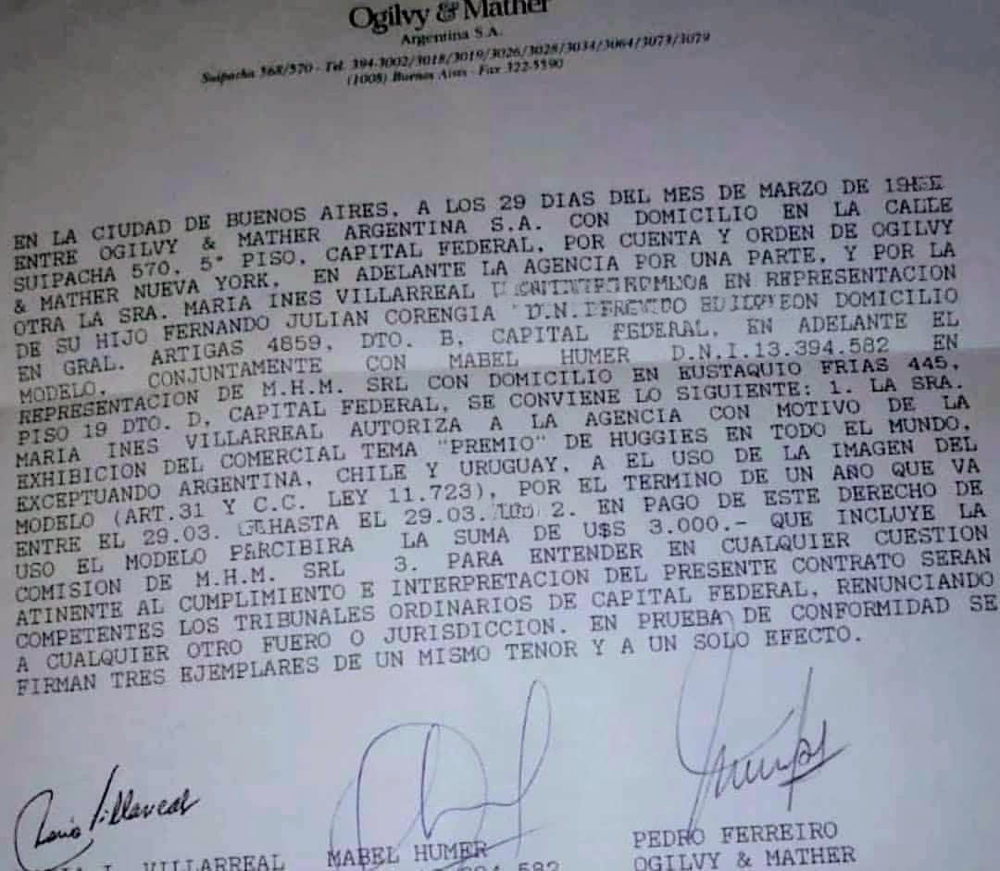
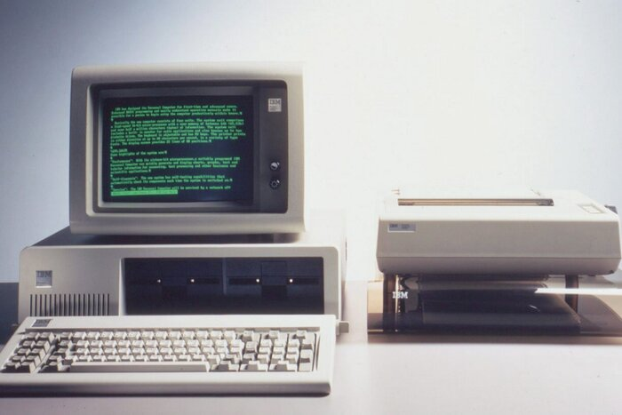

El proyecto surge a partir de un recuerdo familiar ocurrido en 1994. Dicho recuerdo fue la compra de una computadora con el dinero obtenido por una publicidad de pañales en la que participó el autor cuando era un bebé. Esta historia resulta significativa porque condensa una época de cambios, tanto tecnológicos como sociales, y refleja además las decisiones y valores de sus padres. A través de entrevistas, documentos y registros visuales, el autor reconstruye ese momento y lo transforma en un relato poético que combina memoria, emoción y contexto histórico. Se eligió el poema narrativo rimado en voz de la madre para transmitir el tono íntimo del recuerdo y la mirada afectiva desde la cual se vivió la experiencia. Este formato permite unir la reconstrucción familiar con la expresión artística, explorando cómo la tecnología, el azar y el amor se entrelazan en una historia cotidiana.
I. El tiempo y el hogar
Era el año 1994,
la vida parecía sencilla,
yo tenía veinticuatro
y era madre primeriza.
El país respiraba
un aire de crecimiento,
y las familias viajaban,
otros países conociendo.
Los shoppings brillaban
con productos importados
y la buena música
sonaba en todos lados.
La radio encendida
acompañaba cada día,
mucho más que la tele
que el hogar también tenía.
La tecnología era otra,
sin pantallas en la mano,
sin miradas perdidas,
más humano, más cercano.
II. El descubrimiento
Con mi hijo ya de un año
paseando por la calle,
mucha gente se le acerca,
el carisma a él le nace.
“Qué bonito chiquilín”,
comentaba una persona,
“deberías llevarlo a un casting
para mí lo seleccionan”.
Al principio dudé,
pero una dirección abrió la puerta
y entramos juntos de la mano
al estudio de luces intensas.
Recuerdo las cámaras,
la prisa de los asistentes,
la confianza de mi hijo
y sus gestos inocentes.
Él no sabía lo que ocurría,
pero yo en el fondo intuía,
que aquello sería inolvidable
el resto de nuestras vidas.
III. El dinero inesperado
Al firmar el contrato,
observé con total sorpresa
que el pago era en dólares,
y de una cifra espesa.
No tanto por la moneda
pues el peso era equivalente
pero si por el monto,
una suma diferente.
“Es una publicidad internacional”,
me dijeron de la empresa,
“por eso el contrato
que hay arriba de la mesa”.
Guardé aquel dinero
con sumo cuidado,
sin saber en qué gastarlo.
era como un gran regalo.

IV. La decisión
Fue el padre quien lo dijo,
con la convicción de siempre,
“compremos una computadora
para el futuro del nene.”
Yo lo escuché y sonreí.
Quizá no lo entendía del todo,
pero confié en su certeza
e invertimos el ahorro.
Y así, con ese dinero,
una computadora entró en nuestra casa,
embalada totalmente
dentro de una gran caja.
Brillante y con disquetes
que parecían llaves mágicas,
y con una impresora
que reemplazaba a una máquina.
Yo misma la usaba,
además, para jugar,
porque a mis 24 años
también me dejaba atrapar.

V. El legado
Estábamos ahí,
adelantados al tiempo,
no había muchas familias
con esos nuevos instrumentos.
Hoy, al recordar,
sé que esa compra fue una apuesta,
una mirada al futuro,
pero que mucha plata cuesta.
Y ahora cada vez
que pienso en 1994,
no veo solo una computadora,
sino la familia que amo.
Yo llevando a mi hijo
al casting de la mano,
y el padre eligiendo
como invertir lo ahorrado.
Mi hijo sin entenderlo,
siendo el motor de la historia,
que estará viva por siempre
dentro de mi memoria.
Conclusiones
El proceso creativo de este Proyecto Integrador se desarrolló como un camino de exploración y redescubrimiento. A partir de entrevistas con los padres y de la búsqueda de material documental, el autor pudo conocer aspectos de su infancia que desconocía y comprender mejor el contexto en que creció. Convertir ese relato en poesía implicó un trabajo de selección, síntesis y ritmo: encontrar palabras que mantuvieran la verdad del recuerdo pero también la belleza de su transmisión. La elección de la voz de la madre funcionó como un homenaje a su papel en la historia y aportó una mirada más emocional al relato. Este proceso permitió reflexionar sobre cómo lo personal puede transformarse en arte, y cómo una memoria familiar puede representar, en realidad, a toda una generación que comenzaba a convivir con la tecnología y a pensar el futuro desde sus hogares.